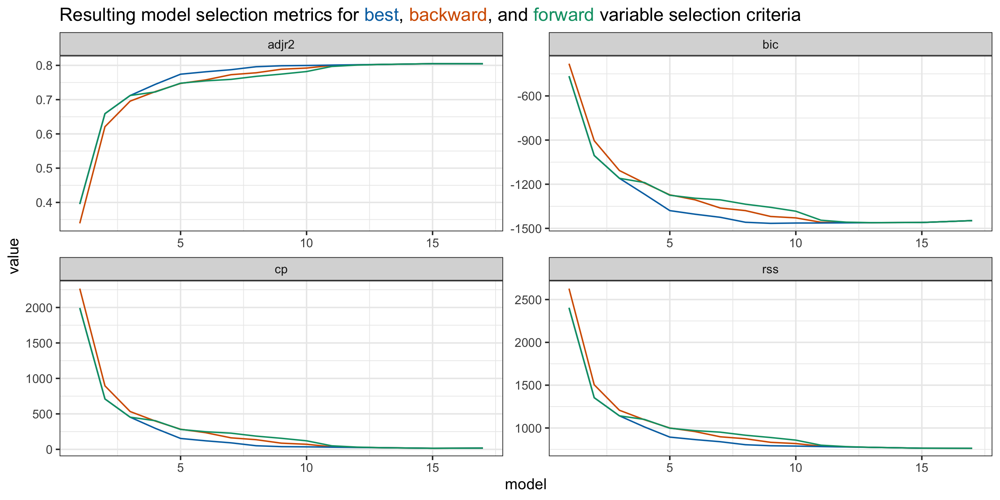

Feature Selection
Grayson White
Stat 243
Week 5 | Fall 2026
Math / Stats / CS Hike!!!
This year’s annual Math/Stats/CS picnic-hike will take place on Saturday, October 10th, from approximately 9:00am (leave Reed) until approximately 2:00pm (return to Reed). The location of the hike is Tryon Creek State Natural Area (approx 7.5 miles from Reed).
A boxed lunch will be provided. Hiking trails are available but don’t feel like you have to hike - there will be games and other activities available at the picnic tables.
Please use this link to sign-up and order a lunch which the departments will cover.
Deadline to sign up is Thursday at Noon - 10/01.
Goals for today (and next time)
Today:
Investigate algorithms for selecting good subsets of predictors
Discuss new metrics for model selection (beyond \(R^2\) and adj \(R^2\)!)
Discuss ways to create and modify predictors
Next time:
- Quiz
- Proof of MSE = Bias\(^2\) + Var
Subset Selection
Methodology
Suppose we wish to find a linear model for \(Y\) with \(p\) predictors \(X_1, \dots, X_p\). How do we determine the optimal collection of predictors?
First, determine an appropriate selection procedure:
Cross-validation: Computationally expensive, but also most accurate; requires no model or data assumptions; best overall
Validation set: Subject to variability in test/training split; but can be alright for large data sets, or initial exploration
Training set assessment: using RSS alone on training will lead to overfitting and biased estimate of test MSE;
- Instead, can apply penalty to RSS based on number of predictors in the model, in order to better estimate test MSE
- However, can use if validation set is not available, or if large number of models need to be considered.
Training Set Criteria
To compare models on the training set, we can use the following metrics, each of which penalizes the training RSS. Suppose we have \(d\) predictors in the model and \(n\) observations:
- Adjusted \(R^2\). Best models have largest \(\textrm{adj }R^2\)
\[ \textrm{adj }R^2 = 1 - \frac{\textrm{RSS}/(n-d-1)}{\textrm{TSS}/(n-1)} \]
- \(C_p\). Best models have smallest \(C_p\)
\[ C_p = \frac{1}{n}(\mathrm{RSS} + 2 d \hat{\sigma}^2) \]
- Akaike information criterion (AIC). Best models have smallest \(\textrm{AIC}\)
\[ \mathrm{AIC} = \frac{1}{n \hat{\sigma}^2}(\mathrm{RSS} + 2 d \hat{\sigma}^2) \]
- Bayesian information criterion (BIC). Best models have smallest \(\textrm{BIC}\)
\[ \mathrm{BIC} = \frac{1}{n \hat{\sigma}^2}(\mathrm{RSS} + \log(n) d \hat{\sigma}^2) \]
Here, \(\hat\sigma^2\) is the estimated from the full model that contains all predictors.
Comparison of Formulas
Criteria Formulas:
| \(C_p = \frac{1}{n}(\mathrm{RSS} + 2 d \hat{\sigma}^2)\) | \(\textrm{adj }R^2 = 1 - \frac{\textrm{RSS}/(n-d-1)}{\textrm{TSS}/(n-1)}\) |
| \(\mathrm{AIC} = \frac{1}{n \hat{\sigma}^2}(\mathrm{RSS} + 2 d \hat{\sigma}^2)\) | \(\mathrm{BIC} = \frac{1}{n \hat{\sigma}^2}(\mathrm{RSS} + \log (n) d \hat{\sigma}^2)\) |
When \(n\) is large relative to \(d\), \(R^2 \approx \textrm{adj }R^2\). Since \(R^2\) overfits models, \(\textrm{adj }R^2\) will also tend to overfit, and so shouldn’t be used.
Other than a multiplicative constant (that doesn’t depend on the model), \(C_p\) and \(\textrm{AIC}\) are equal, and so will always preference the same models
Both \(\textrm{AIC}\) and \(\textrm{BIC}\) apply a penalty for adding additional predictors; since \(\log(n) > 2\), this penalty is greater for \(\textrm{BIC}\) than \(\textrm{AIC}\); hence, BIC will select models with fewer variables.
When comparing models with the same number of variables, differences in these criteria values will only depend on differences in RSS.
- Hence, for fixed number of variables, we can choose the model that has the smallest RSS.
New data context: molecular solubility
The solubility data set from the AppliedPredictiveModeling package contains solubility and chemical structure for a sample of 1,267 different compounds.
The solubility of a compound indicates how easily it dissolves in a solvent (often water), and is measured as the amount of solvent required to dissolve 1 part of the compound.
- The less solvent required, the more soluble the compound.
- In the dataset, the log solubility is reported, since solubility spans many orders of magnitude
The data also contains 16 chemical count descriptors, such as “number of bonds” or “number of bromine atoms”
Finally, the data contains 4 continuous descriptors, such as “molecular weight” or “surface area”
We are interested in determining solubility based on these 20 chemical descriptors.
Data preprocessing
MolWeight NumAtoms NumNonHAtoms NumBonds NumNonHBonds NumMultBonds
661 208.28 28 16 30 18 16
662 365.54 49 26 52 29 13
663 206.31 33 15 33 15 7
665 136.26 26 10 26 10 2
668 229.75 31 15 31 15 6
669 270.25 32 15 31 14 2
NumRotBonds NumDblBonds NumAromaticBonds NumHydrogen NumCarbon NumNitrogen
661 0 0 16 12 14 2
662 4 0 12 23 21 3
663 4 1 6 18 13 0
665 1 2 0 16 10 0
668 5 0 6 16 9 5
669 5 2 0 17 10 1
NumOxygen NumSulfer NumChlorine NumHalogen NumRings HydrophilicFactor
661 0 0 0 0 3 -0.856
662 1 1 0 0 4 -0.370
663 2 0 0 0 1 -0.330
665 0 0 0 0 1 -0.960
668 0 0 1 1 1 -0.069
669 1 1 2 2 0 -0.651
SurfaceArea1 SurfaceArea2 Solubility
661 25.78 25.78 -3.97
662 52.19 80.43 -3.98
663 37.30 37.30 -3.99
665 0.00 0.00 -4.00
668 53.94 53.94 -4.06
669 20.31 45.61 -4.08Best Subset
With \(p\) predictors, there are a total of \(2^p\) possible MLR models.
- There are \(\binom{p}{d} = \frac{p!}{d!(p-d)!}\) models using exactly \(d\) of \(p\) predictors
Theoretically, we can find the best model by fitting each possible model and selecting the best via appropriate selection criteria.
Downsides?
Computation time and storage grows exponentially in \(p\)
Might not be worth it! May have low marginal improvement despite number of models fitted
Best Subset in R
We use the regsubsets function in the leaps library.
regsubsetsuses the same syntax aslm. Thesummaryfunction outputs the best set of variables for the given number of predictors, across the range suppliedBe default,
regsubsetsonly returns up to the best eight models. Butnvmaxcan be used to return as many variables as desiredThe best model for each fixed number of predictors is determined by \(RSS\)
The
regsubsetsfunction returns \(RSS\), \(\textrm{adj}R^2\), \(C_p\), and \(BIC\) for the best model of each number of predictors.The overall best model can be selected using any of these criteria.
Using regsubsets
- The
regsubsetsfunction itself outputs a specialregsubsetsobject, which contains data but is not user-accessible.
- We’ll use the
summaryfunction, which provides the following elements:which: a list of which predictors are in each modeloutmat: a version ofwhichfor printing- Several metrics:
rsq,rss,adjr2,cp,bic
Summary of regsubsets
Stars indicate variable is included in model.
For readability, I’ve only shown models with 5 or fewer variables
MolWeight NumAtoms NumNonHAtoms NumBonds NumMultBonds NumRotBonds
1 ( 1 ) "*" " " " " " " " " " "
2 ( 1 ) "*" " " " " " " " " " "
3 ( 1 ) "*" " " " " " " "*" " "
4 ( 1 ) " " " " "*" " " " " " "
5 ( 1 ) " " " " "*" "*" " " "*"
NumDblBonds NumAromaticBonds NumCarbon NumNitrogen NumOxygen NumSulfer
1 ( 1 ) " " " " " " " " " " " "
2 ( 1 ) " " " " " " " " " " " "
3 ( 1 ) " " " " " " " " " " " "
4 ( 1 ) " " " " "*" "*" "*" " "
5 ( 1 ) " " " " " " "*" "*" " "
NumChlorine NumHalogen HydrophilicFactor SurfaceArea1 SurfaceArea2
1 ( 1 ) " " " " " " " " " "
2 ( 1 ) " " " " " " "*" " "
3 ( 1 ) " " " " " " "*" " "
4 ( 1 ) " " " " " " " " " "
5 ( 1 ) " " " " " " " " " " Other Selection Metrics
The summary function can return selection metrics for each model.
# A tibble: 17 × 5
model adjr2 rss cp bic
<int> <dbl> <dbl> <dbl> <dbl>
1 1 0.395 2404. 1992. -466.
2 2 0.659 1354. 710. -1005.
3 3 0.712 1142. 453. -1160.
4 4 0.745 1012. 296. -1268.
5 5 0.774 894. 154. -1379.
6 6 0.781 865. 120. -1404.
7 7 0.787 840. 91.8 -1425.
8 8 0.796 805. 50.8 -1458.
9 9 0.799 793. 38.1 -1466.
10 10 0.800 789. 35.4 -1464.
11 11 0.801 783. 30.8 -1463.
12 12 0.802 779. 27.1 -1462.
13 13 0.803 774. 23.3 -1461.
14 14 0.804 769. 19.2 -1460.
15 15 0.805 764. 15.0 -1460.
16 16 0.805 763. 16.4 -1454.
17 17 0.805 763. 18 -1447.Plotting
We can use ggplot2 to visualize selection metric as a function of variable number
Plotting
We can use ggplot2 to visualize selection metric as a function of variable number
Plotting
We can use ggplot2 to visualize selection metric as a function of variable number
Plotting
We can use ggplot2 to visualize selection metric as a function of variable number
Plotting
We can use ggplot2 to visualize selection metric as a function of variable number
Finding Best Subset
- To calculate the absolute best
cp,bic, etc. we can use either thewhich.minorwhich.maxfunction:
# A tibble: 1 × 4
adjr2.max rss.min cp.min bic.min
<int> <int> <int> <int>
1 15 17 15 9So what model is best?
Usually the simplest model.
Model Coefficients
To show coefficients associated with the model with lowest bic, use coef:
(Intercept) MolWeight NumBonds NumMultBonds
0.179049978 -0.007776351 -0.042507435 -0.368292209
NumRotBonds NumAromaticBonds NumNitrogen NumOxygen
-0.138979290 0.225474767 0.628386933 0.782490751
NumChlorine SurfaceArea2
-0.386474357 -0.008279467 Model Comparison
Now that we’ve used our new metrics to find reasonable models, let’s test their predictive performance!
Let’s go with 4 models, based on best subset (since we have it)
5 variables (elbow of bic plot)
9 variables (best bic)
15 variables (best adjusted \(R^2\) and \(C_p\))
17 variables (the full model)
Fitting the four models
library(tidymodels)
lm_spec <- linear_reg() %>%
set_engine("lm")
mod5_wf <- workflow() %>%
add_model(lm_spec) %>%
add_formula(Solubility ~ NumNonHAtoms + NumBonds + NumRotBonds+ NumNitrogen + NumOxygen)
mod9_wf <- workflow() %>%
add_model(lm_spec) %>%
add_formula(Solubility ~ MolWeight + NumBonds + NumMultBonds + NumRotBonds +
NumAromaticBonds + NumNitrogen + NumOxygen + NumChlorine + SurfaceArea2)
mod15_wf <- workflow() %>%
add_model(lm_spec) %>%
add_formula(Solubility ~ . -NumNonHBonds -NumHydrogen -NumRings -NumNitrogen -NumOxygen)
mod17_wf <- workflow() %>%
add_model(lm_spec) %>%
add_formula(Solubility~ . -NumNonHBonds -NumHydrogen -NumRings) Model Comparison with cross validation
We’ll use 10-fold cross-validation to compare:
set.seed(100)
library(rsample)
my_cv <- vfold_cv(solTrain, v = 10)
mod5_res <- fit_resamples(mod5_wf, resamples = my_cv, metrics = metric_set(rmse))
mod9_res <- fit_resamples(mod9_wf, resamples = my_cv, metrics = metric_set(rmse))
mod15_res <- fit_resamples(mod15_wf, resamples = my_cv, metrics = metric_set(rmse))
mod17_res <- fit_resamples(mod17_wf, resamples = my_cv, metrics = metric_set(rmse))# A tibble: 4 × 6
.metric .estimator mean n std_err .config
<chr> <chr> <dbl> <int> <dbl> <chr>
1 rmse standard 0.976 10 0.0173 pre0_mod0_post0
2 rmse standard 0.920 10 0.0206 pre0_mod0_post0
3 rmse standard 0.909 10 0.0223 pre0_mod0_post0
4 rmse standard 0.912 10 0.0213 pre0_mod0_post0- It appears the model with 15 predictors performed best!
Other Selection Algorithms
Forward Selection
Forward selection is a computationally efficient alternative to best subset
To perform forward selection, create the best 1 variable model. Then create \(p-1\) new \(2\) variable models by adding each other predictor one-at-a-time to the existing \(1\)-variable model. Repeat for \(3\) variables and so on.
Compared to Best Subset, forward selection computation time grows polynomially in \(p\): \(\textrm{Num. Models} = 1 + \frac{p(p+1)}{2}\)
Forward selection tends to favor parsimonious models
Downsides?
- Not guaranteed to find the best model (or even something close to the best model)
- Early predictors may become redundant
- Can be unstable
Backward Elimination
Backward Elimination is another computationally efficient alternative to best subset
To perform backward selection, begin with full model. Then create \(p-1\) new \(p-1\) variable models by removing one-at-a-time each other predictor from the existing \(p\)-variable model. Repeat for \(p-2\) variables and so on.
Compared to Best Subset, backward elimination computation time grows polynomially in \(p\): \(\textrm{Num. Models} = 1 + \frac{p(p+1)}{2}\)
Backward elimination tends to favor in-depth models
Downsides?
- Not guaranteed to find the best model (or even something close to the best model)
- Requires fewer predictors than observations
- Susceptible to multicollinearity
- Can be unstable
Forward/Backward Selection in R
We again use the regsubsets function in the leaps library.
- All of the same tools used for best subsets are available for forward and backward selection
Comparison of Models

Next time
- Quiz
- Problem Set 4 assigned
- Proof of MSE = Bias\(^2\) + Var
R code for creating the plot in the final slide
library(ggtext)
metrics <- data.frame(model = 1:17,
adjr2 = summary(best_subset)$adjr2,
rss = summary(best_subset)$rss,
cp = summary(best_subset)$cp,
bic = summary(best_subset)$bic) %>%
rbind(
data.frame(model = 1:17,
adjr2 = summary(forward_select)$adjr2,
rss = summary(forward_select)$rss,
cp = summary(forward_select)$cp,
bic = summary(forward_select)$bic
)
) %>%
rbind(
data.frame(model = 1:17,
adjr2 = summary(backward_elim)$adjr2,
rss = summary(backward_elim)$rss,
cp = summary(backward_elim)$cp,
bic = summary(backward_elim)$bic
)
) %>%
mutate(method = rep(c("best", "forward", "backward"), each = 17))
metrics %>%
pivot_longer(!c(model, method), names_to = "var", values_to = "value") %>%
ggplot(aes(x = model, y = value, color = method)) +
geom_line(linewidth = .5) +
facet_wrap(~var, scales = "free") +
scale_color_manual(
values = c(best = "#0072B2", forward = "#009E73", backward = "#D55E00")
) +
theme_bw() +
labs(title = "Resulting model selection metrics for
<span style='color:#0072B2;'>best</span>,
<span style='color:#D55E00;'>backward</span>, and
<span style='color:#009E73;'>forward</span> variable selection criteria") +
theme(legend.position = "none",
plot.title = element_markdown())